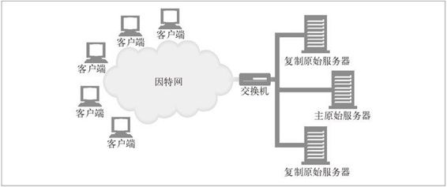
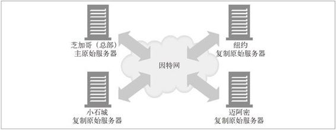
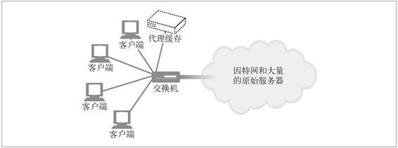

18.3 使网站更可靠
在下面列出的这些时间段内，网站通常是无法运作的。
服务器宕机的时候。
交通拥堵：突然间很多人都要看某个特别的新闻广播或涌向某个大甩卖网店。突然的拥堵可以使 Web 服务器过载，降低其响应速度，甚至使它彻底停机。
网络中断或掉线。
本节会展示一些预判和处理这些常见问题的方法。
18.3.1 镜像的服务器集群
服务器集群是一排配置相同的 Web 服务器，互相可以替换。每个服务器上的内容可以通过镜像复制，这样当某个服务器出问题的时候，其他的可以顶上。
镜像的服务器常常组成层次化的关系。某个服务器可能充当“内容权威”——它含有原始内容（可能就是内容作者上传的那个服务器）。这个服务器称为主原始服务器（master origin server）。从主原始服务器接收内容的镜像服务器称为复制原始服务器（replica origin server）。一种简单的部署服务器集群的方法是用网络交换机把请求分发给服务器。托管在服务器上的每个网站的 IP 地址就设置为交换机的 IP 地址。
在图 18-6 显示的镜像服务器集群中，主原始服务器负责把内容发送给复制原始服务器。对集群外部来说，内容所在的 IP 地址就是交换机的 IP 地址。交换机负责把请求发送到服务器上去。

图 18-6 镜像的服务器集群
镜像 Web 服务器可以在不同的地点包含同样内容的副本。图 18-7 展示了 4 个镜像服务器，其中主服务器在芝加哥，复制服务器在纽约、迈阿密和小石城。主服务器为芝加哥地区的客户端服务，并肩负把内容传播给复制服务器的任务。

图 18-7 分散的镜像服务器
在图 18-7 的场景中，有以下两种方法把客户端的请求导向特定的服务器。
HTTP 重定向
该内容的 URL 会解析到主服务器的 IP 地址，然后它会发送重定向到复制服务器。
DNS 重定向
该内容的 URL 会解析到 4 个 IP 地址，DNS 服务器可以选择发送给客户端的 IP 地址。
请参见第 20 章，以获取详细信息。
18.3.2 内容分发网络
简单地说，内容分发网络（CDN）就是对特定内容进行分发的专门网络。这个网络中的节点可以是 Web 服务器、反向代理或缓存。
18.3.3 CDN中的反向代理缓存
在图 18-6 和图 18-7 中，复制原始服务器可以用反向代理（也称为替代物）缓存来代替。反向代理缓存可以像镜像服务器一样接受服务器请求。它们代表原始服务器中的一个特定集合来接收服务器请求。（根据内容所在的 IP 地址的广告方式，这是有可能的，原始服务器和反向代理缓存之间通常有协作关系，到特定的原始服务器的请求就由反向代理缓存来接收。）
反向代理和镜像服务器之间的区别在于反向代理通常是需求驱动的。它们不会保存原始服务器的全部内容副本，它们只保存客户端请求的那部分内容。内容在其高速缓存中的分布情况取决于它们收到的请求，原始服务器不负责更新它们的内容。为了更容易地访问“热点”内容（就是高请求率的内容），有些反向代理具有“预取”特性，可以在用户请求之前就从服务器上载入内容。
CDN 中带有反向代理时，可能会由于存在代理的层次关系而增加其复杂性。
18.3.4 CDN中的代理缓存
代理缓存也可以部署在类似图 18-6 和图 18-7 的环境中。与反向代理不同，传统的代理缓存能收到发往任何 Web 服务器的请求。（在代理缓存与原始服务器之间不需要有任何工作关系或 IP 地址约定。）但是与反向代理比起来，代理缓存的内容一般都是按需驱动的，不能指望它是对原始服务器内容的精确复制。某些代理缓存也可以预先载入热点内容。
按需驱动的代理缓存可以部署在其他环境中——尤其是拦截环境，在这种情况下，2 层或 3 层设备（交换机或路由器）会拦截 Web 流量并将其发送给代理缓存（参见图 18-8）。

图 18-8 客户端的请求被交换机拦截并发给代理缓存
拦截环境依赖于在客户端和服务器之间设置网络的能力，这样，所有合适的 HTTP 请求才能真正发送到缓存中去。（参见第 20 章）。根据收到的请求，将内容分布在缓存中。